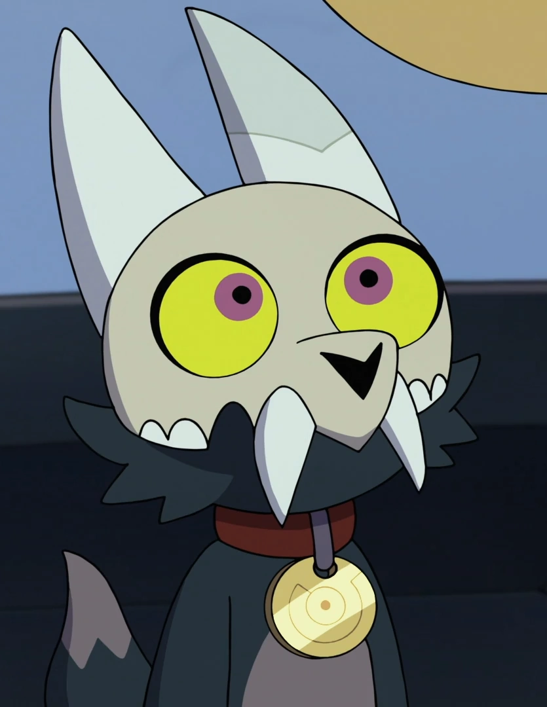

King Clawthorne

King Clawthorne is a secondary character in the animated TV series The Owl House. He meets the main character Luz upon her stumbling into the home of Eda the Owl Lady. Despite his childlike demeanor, King insists that he is king of all the Titans and seeks to find his lost people.
Reasons I Like Him
- Look at his character design!!! I love the skull he has and how much it says about the unfamiliar setting.
- He's voiced by Alex Hirsch, who created another one of my favorite animated series, Gravity Falls.
- I have a soft spot for cuter characters and the arc that he's given at the end of the series manages not to negate any of that comic relief while making him an important part of the plot.